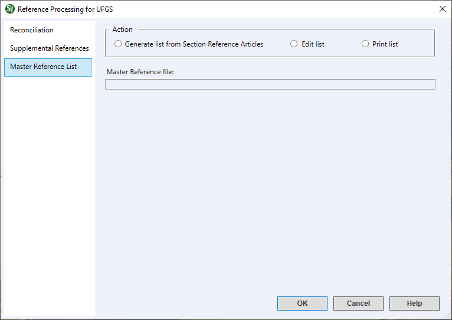

This command can only be executed from the SpecsIntact Explorer's Process menu.
The Master Reference List tab provides options to manage references by creating a new list that automatically extracts key details like Reference Organizations (ORG), Reference Identifiers (RID), and Reference Titles (RTL) directly from the Reference Articles within your selected Master. Once generated, you can easily edit the existing Master Reference List or even print its entire contents for a complete overview.
 Generating a Master Reference List will automatically overwrite the previous version, if one exists, replacing all the prior information.
Generating a Master Reference List will automatically overwrite the previous version, if one exists, replacing all the prior information.
 The available options in SpecsIntact differ between Jobs and Masters, reflecting their distinct purposes and requirements. The Master Reference List tab is unique to Masters.
The available options in SpecsIntact differ between Jobs and Masters, reflecting their distinct purposes and requirements. The Master Reference List tab is unique to Masters.
 Click the tabbed commands on the image below to see how to use each function.
Click the tabbed commands on the image below to see how to use each function.

- Action - Provides the option to generate, manage, and print a list of references used throughout the project Sections.
- Generate list from Section Reference Articles - Generates and builds a Master Reference List using the Reference Organizations (ORG), Reference Identifiers (RID), and Reference Titles (RTL) found in the Section's Reference Articles within the selected Master.
- Edit list - Allows you to edit an existing Master Reference List to update or add more References. This is the primary way to make changes, since the list isn't visible in the SpecsIntact Explorer. Keep in mind that if References are updated or added to the Master specifications, simply regenerating the Master Reference List will automatically update everything.
- Print list - Opens the Print Setup window so you can select a printer and Master Reference List that displays an all-inclusive export of your project's data, compiling information from each tab into one cohesive document. It offers a detailed summary of the entire project, making it ideal for sharing with your project team to support design review meetings.
Standard Windows Commands
 The OK button will execute and save the selections made.
The OK button will execute and save the selections made.
 The Cancel button will close the window without recording any selections or changes entered.
The Cancel button will close the window without recording any selections or changes entered.
 The Help button will open the Help Topic for this window.
The Help button will open the Help Topic for this window.
How To Use This Feature
To Generate a Master Reference List:
- In the SpecsIntact Explorer, select a Master, select the Process menu, then select Reference Processing for Master
- In the Reference Processing window, select the Master Reference List tab
- Below Action, select Generate list from Section Reference Articles
- Click OK
- If the Overwrite Existing Reference List window appears, perform one of the following:
- Click Yes if you want to overwrite the list, then click OK
- Click No if you do not want to overwrite the list
to Edit a Master Reference List:
- In the SpecsIntact Explorer, select a Master, select the Process menu, then select Reference Processing for Master
- In the Reference Processing window, select the Master Reference List tab
- Below Action, select Edit list
- Click OK
- When the Master Reference List (master.ref) file opens in the SI Editor, make the necessary modifications, then save and close the file
Users are encouraged to visit the SpecsIntact Website's Support & Help Center for access to all of our User Tools, including Web-Based Help (containing Troubleshooting, Frequently Asked Questions (FAQs), Technical Notes, and Known Problems), eLearning Modules (video tutorials), and printable Guides.